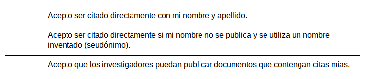

Anexo 5 - Consentimiento informado
Título del proyecto: “El movimiento Global por el Hardware Científico Abierto y su contribución a la democratización de la ciencia y la tecnología en el Sur Global”
Responsable: Julieta C. Arancio
Nombre del participante: [PARTICIPANTE]
Gracias por aceptar ser entrevistado como parte del mencionado proyecto de investigación. Los procedimientos éticos para la investigación académica respaldados por el Consejo Nacional de Investigación Científica y Técnica - Argentina (CONICET) requieren que los entrevistados otorguen su consentimiento informado previa participación, conociendo cómo se utilizará la información brindada en su entrevista.
El propósito de este formulario de consentimiento es proveer a los participantes de esta investigación con una clara explicación de la naturaleza de la misma, así como de su rol en ella como participantes.
La entrevista tomará un tiempo máximo de 90 minutos. No anticipamos que existan riesgos asociados con su participación, pero usted tiene el derecho de detener la entrevista o retirarse de la investigación en cualquier momento.
Proceso de entrevista y condiciones
- La entrevista será grabada y se producirá una transcripción de la misma;
- los productos del análisis le serán enviados, dándole la oportunidad de corregir o ampliar cualquier error o aspecto que usted detecte;
- la transcripción de la entrevista será analizada por Julieta Arancio como investigadora responsable;
- el acceso a la transcripción será limitado a Julieta Arancio y colegas académicos con los que colabora como parte del proceso de investigación;
- la grabación será almacenada de forma encriptada para el análisis y destruida en diciembre 2020;
- cualquier modificación en las condiciones anteriores sólo podrá ocurrir con su explícita aprobación.
Acuerdo sobre citas y referencias
Por favor indique con cuál de las siguientes declaraciones está de acuerdo en términos de citas textuales surgidas de la entrevista:

Productos de investigación
El contenido de su entrevista puede ser utilizado total o parcialmente en:
- documentos académicos, recomendaciones de políticas o artículos de prensa
- blogs online y/o presentaciones orales en conferencias
- eventos comunitarios relacionados a la temática
- archivo del proyecto de investigación
Al firmar este formulario, acepto que:
- Estoy participando voluntariamente en este proyecto: Entiendo que no tengo obligación de participar y que puedo detener la entrevista en cualquier momento si así lo deseo;
- He leído y estoy de acuerdo con las condiciones de la entrevista;
- La transcripción de la entrevista o los extractos de ella pueden ser utilizados como se describió anteriormente;
- No espero recibir ningún beneficio o pago por mi participación;
- Puedo solicitar una copia de la transcripción de mi entrevista y hacer modificaciones que considere necesarias para garantizar la efectividad de cualquier acuerdo de confidencialidad;
- He podido realizar preguntas y entiendo que soy libre de contactar al investigador con cualquier pregunta que pueda tener en el futuro.
FIRMA INVESTIGADOR
FIRMA PARTICIPANTE
Información de contacto
Esta investigación ha sido revisada y aprobada por el “Consejo Nacional de Investigación Científica y Técnica- Argentina (CONICET)” y “Universidad Nacional de Quilmes”. Si tiene más preguntas o inquietudes sobre este estudio, comuníquese con:
DATOS INVESTIGADORA
DATOS DIRECTORA